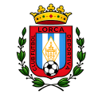
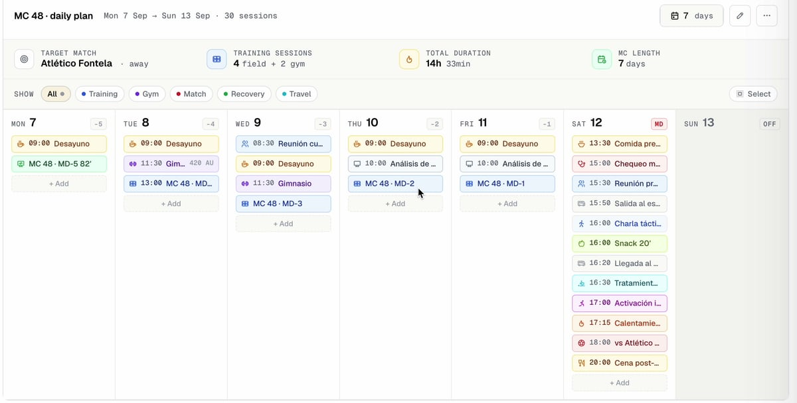
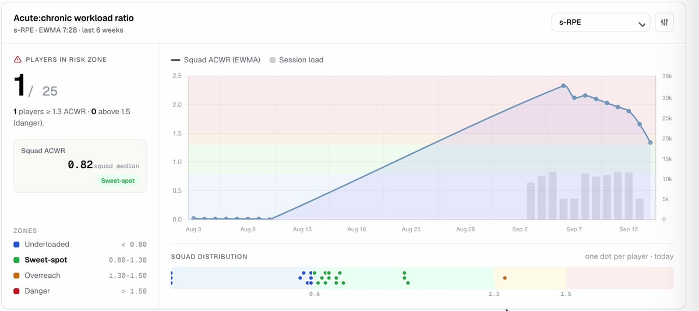
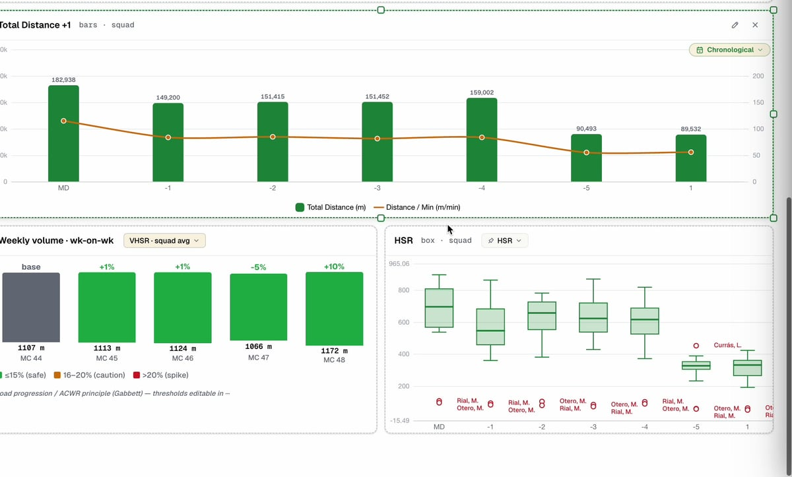
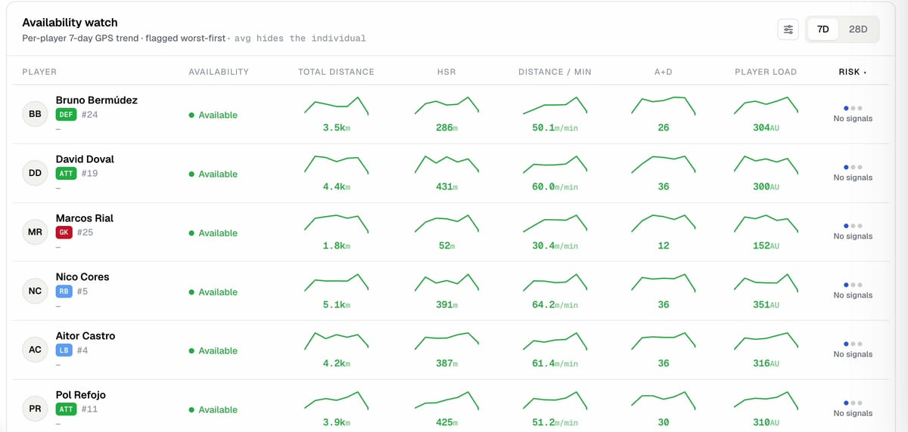

Planner
Build microcycles and daily sessions with drag-and-drop blocks, tagged by focus.
Plan microcycles, monitor load, track availability and analyze GPS — across every category, in one workspace. From the senior squad down to the Sub-14.
Performance staff already working in ClavaMetrics

Lorca DeportivaMC 49 · MD-5 · Training session today @ 18:30 · Centro de Entrenamiento
One workspace for planning, monitoring, medical and analysis — replacing the spreadsheets, group chats and disconnected tools.
Build microcycles and daily sessions with drag-and-drop blocks, tagged by focus.
Acute:chronic workload ratios and alerts that flag spikes before they become injuries.
Daily presence, session minutes and status across the whole squad at a glance.
Native Catapult sync, plus CSV import for any other provider — distance, sprints and high-speed running by session.
Athlete check-ins for sleep, soreness and effort, plotted against planned load.
Injury logs, rehab planners and return-to-play protocols shared with the medical staff.
Post-match minutes, ratings and GPS output rolled into one shareable report.
Hydration, body composition and meal guidance tracked alongside training load.
ClavaMetrics keeps the whole performance cycle in one place — so what you plan, what athletes do, and what you decide never live in separate tools.
Lay out the week with drag-and-drop session blocks, colour-coded by focus. Reuse templates from your library and assign work to whole categories or individual athletes.




From building a microcycle to flagging an at-risk athlete — a quick tour of how ClavaMetrics fits a real performance week.
From a single category to an entire federation — ClavaMetrics adapts to how your organization is structured.
Run senior, reserves and every youth category from one workspace — each with its own staff and plan.
Basketball, volleyball, swimming, athletics and more — one performance language across every discipline.
Centralize the performance data of every team and category, with multi-tenant access and data residency.
Plan, prescribe and monitor load with the depth a strength & conditioning team actually needs.
Track injuries, build rehab plans and manage return-to-play in sync with the training calendar.
One dashboard across every category to oversee availability, load and methodology club-wide.
Build and analyze on the web platform. Athletes check in, log RPE and follow sessions from their phone — no install required.
The full performance OS — planner, load monitor, GPS analysis and reports — on one screen.
Wellness, RPE and today's session — in the athlete's pocket.
A centralized performance platform for clubs and federations of every sport. Plan training, monitor load, track availability and analyze GPS — for every category, from one place, with one bill.
Yes. The same planning, load and availability tools work for basketball, volleyball, swimming, athletics, rugby and more. Multisport academies run every discipline in one workspace.
Athletes open ClavaMetrics from their phone browser and get their plan, wellness check-ins and RPE forms — no app store, no install. Staff build and analyze everything on the web platform, and the two stay in sync automatically.
On Profesional and Full tiers, ClavaMetrics connects natively to your Catapult (OpenField) account and syncs sessions automatically. Data from any other provider — StatSports, Polar, WIMU, GPSports — comes in via CSV import; more native integrations are on the roadmap.
The Iniciación tier is free forever for categories under 15 athletes. Every paid tier includes a 15-day trial with no card required.
Set up your club workspace in minutes. Start free on youth categories, and add paid tiers only where you need them.